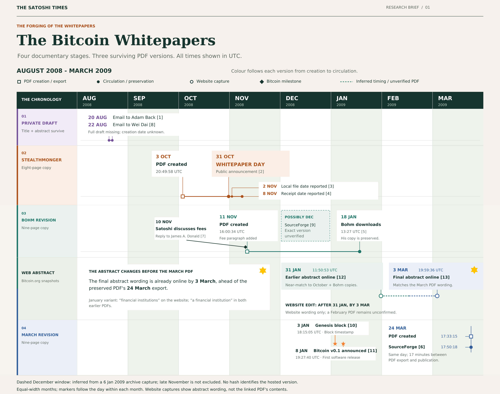

TITLE AS SENT IN AUGUST 2008
Electronic Cash Without a Trusted Third Party
◆
The starting text in this four-stage record.
THE FORGING OF THE WHITEPAPERS
Four versions of The Bitcoin Whitepaper are known. Three are accounted for. One remains lost...
Begin in August 200801 / PRIVATE CORRESPONDENCE
TITLE AS SENT IN AUGUST 2008
THE REVISION ROOM
Choose two stages. See what changed, what stayed, and what moved.
satoshi@anonymousspeech.comSender in the emails to Adam Back and Wei Dai.
EMAIL CORRESPONDENCEsatoshi@vistomail.comPrinted on the StealthMonger and Bohm copies.
PDF · PAGE 1satoshin@gmx.comThe domain changes, and the username gains an “n.”
PDF · PAGE 1The August sender address survives in the correspondence. The address printed in the missing August PDF remains unknown.
Layout note. The difficulty-adjustment paragraph is word-for-word identical in all three PDFs. It moves from §6 (Incentive) in October and November to §4 (Proof-of-Work) in March.
All wording edits flagged in these two reports are represented in the comparison passages above. Page numbers, line wrapping and the moved difficulty paragraph account for the remaining highlighted differences.
Report 1 adds the fee paragraph and removes “also” from the next paragraph’s opening sentence. The abstract and SPV wording stay the same; the added text shifts the page breaks.
Read comparison report 1 ↗Report 2 flags edits to the abstract, contact address, fees, first network step and second SPV paragraph. The unchanged difficulty paragraph moves from §6 to §4.
Read comparison report 2 ↗Reviewed 21 October 2026. Line-end splits such as “peer-to-” / “peer” are normalized when comparing wording. Use the page overlay to see their original layout.
READING THE RECORD
A creation field, a public announcement and a saved download tell different parts of the story.
The three PDFs record 3 October, 11 November and 24 March. Their timezone offsets are preserved and converted to UTC below.
EMBEDDED METADATASatoshi announced Bitcoin on 31 October 2008. The announcement’s title and abstract match the surviving October copy.
PUBLIC RECORD ↗StealthMonger reported receipt on 8 November. Bohm’s statement records a download on 18 January 2009 at 13:27 UTC.
REPORTED DOWNLOADSThe evidence supports a sequence of revisions. It does not establish a complete list of every draft, or prove the exact release-day bytes from metadata alone.
THE DOCUMENTARY CHRONOLOGY
From the first private email to the March publication. Creation, circulation and preservation, side by side.

The 31 January capture preserves the earlier abstract. By the 3 March capture, the website already carries the final abstract, before the preserved PDF’s 24 March export.
This brackets the website edit. It does not establish an earlier revised PDF.
The nine-page file records 11 November 2008, 16:00:34 UTC. Bohm’s witness statement, §19, records his download on 18 January 2009, 13:27 UTC.
The December SourceForge listing is a separate clue; its exact PDF version remains unverified.
THE RECORD AT A GLANCE
| The record | 01 · AUGUST 2008Private draft | 02 · OCTOBER 2008Release-era copy | 03 · NOVEMBER 2008Bohm revision | 04 · MARCH 2009March revision |
|---|---|---|---|---|
| Circulation record | 20 Aug 2008 17:30:39 UTCPrivate email to Adam Back [1] | 31 Oct 2008 18:10:00 UTCPublic announcement [2] | Possibly Dec 2008SourceForge listing; version unverified [9]. Bohm downloads his copy on 18 Jan 2009 [5]. | 24 Mar 2009 17:50:18 UTCSourceForge RSS pubDate reproduced in Appendix PM3 [6] |
| PDF export metadata | UnknownFull August PDF unavailable | 3 Oct 2008 20:49:58 UTC | 11 Nov 2008 16:00:34 UTC | 24 Mar 2009 17:33:15 UTC |
| Web abstract record | UnknownFull August PDF unavailable | Near-match to 31 Jan webpage [12]Same PDF abstract as Bohm | 31 Jan 2009 11:50:53 UTC [12]Earlier wording still online | 3 Mar 2009 19:59:36 UTC [13]Final wording already online |
| What survives | Title + abstractPage count unknown | Complete PDF8 pages | Complete PDF9 pages | Complete PDF9 pages |
| Word edits vs previous stage | BaselineKnown fragments only | 8*7 title + 1 abstract | 6059 added + 1 deleted | 53Counting method below |
| Main changes | Proposal titled Electronic Cash Without a Trusted Third Party. | Adopts the Bitcoin title; “offer” becomes “provide” in the abstract. | Adds transaction fees and a possible transition to fee-only incentives. | Revises abstract, fee and SPV wording; moves the difficulty paragraph; changes email. |
| Contact address | satoshi@anonymousspeech.comEmail sender; PDF unknown | satoshi@vistomail.comPrinted in the PDF | satoshi@vistomail.comPrinted in the PDF | satoshin@gmx.comPrinted in the PDF |
| Preserved through | Adam Back & Wei DaiCorrespondence [1, 8] | StealthMonger / GwernPreserved PDF [3, 4] | Nicholas BohmExhibit NB1; COPA v Wright [5] | bitcoin.org / SourceForgePDF + archived RSS evidence [6] |
* The August comparison covers only the surviving title and abstract. Changes to the missing full draft cannot be counted.
One added, deleted or replaced word counts as one edit within corresponding passages; case, punctuation and layout are ignored. The unchanged 39-word difficulty paragraph moves between sections. These whole-record counts use a different method from the interactive passage comparison above.
Circulation entries describe different events. The eight-page copy is consistent with the release-era paper; its exact bytes at announcement time are not independently captured.
Exact times are UTC where a timezone is established. Date-only reports retain their original uncertainty.
These numbers belong to the timeline and comparison table. The source desk below includes the wider archive bibliography.
THE SOURCE DESK
Inspect the pages. Download the original files. Check the hashes.
The August view transcribes the abstract preserved in the Wei Dai correspondence and identifies the sender address also visible in the Adam Back email. That address is not evidence of what was printed in the missing PDF. The three PDF views use the actual files. Their hashes, byte counts, page counts and creation fields were read directly from those files. The bundled PDFs are unchanged; page images are rendered derivatives.
Text comparisons cover the full abstract and six selected titles, addresses or passages. Line wrapping and repeated spaces are normalized. Both supplied HTML comparison reports were reviewed against the original PDFs; their wording edits are covered in these passages. These are not whole-document binary diffs. Use the original PDFs and page overlay for layout, equations, diagrams and pagination.
The Bohm PDF linked from NicholasBohm/Emails matches the bundled verified copy byte for byte. Its MD5 and SHA-256 also match Appendix PM3, §42 (pp. 14–15), reproduced in the linked JFIF. The appendix identifies itself as “Madden Appendix PM3”; its NB1 analysis begins at §41.
The chronology adds two bitcoin.org captures, a SourceForge listing and the RSS publication record reproduced in Appendix PM3. Website captures establish abstract wording, not the linked PDF’s exact contents. The possible December listing remains unverified by a file hash. The comparison table’s word-edit counts ignore case, punctuation and layout, whereas the interactive passage comparison retains punctuation.
The August draft’s full contents are unknown. A missing passage is marked “unknown,” rather than treated as evidence it was absent. The October fee paragraph, by contrast, is demonstrably absent. Equal spacing on the interactive four-stop timeline is for navigation, not elapsed time. The month-by-month graphic uses equal-width months, with day positions inside each month. “Four stages” is an editorial structure, not Satoshi’s version numbering.